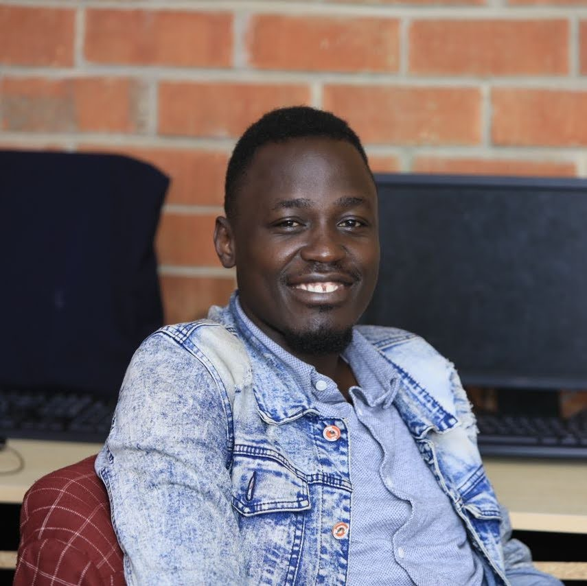

Emaru Daniel | WDD 130

Hello! My name is Emaru Daniel and I am from Kampala, Uganda. I enjoy playing and watching soccer, swimming, reading, and making new friends. I am a third born of six siblings to our lovely parents who God has blessed with life till now. Enrolled to BYU-Pathway since 2022, I graduated with a bachelors of Applied Health of BYU-Idaho in August, 2025. Joined Software enginerring course this term and having an experience of learning new things like Databases, Coding, and Website designing. I'm excited to learn web development in this WDD 130 course and build amazing websites! It is abit challenging to cop up with but with dedication and regular practice, I believe this module will become a reality to me, as it already looks facinating to me. Looking forward to a great time learning with you!